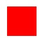
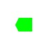
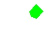

Shape node is used to draw a shape (rectangle or circle).
Shape contains 2 properties:
See Shape node chapter for more information about shape properties.
The following example draw a red rectangle at center of the screen.

We can draw:
We can define custom shape with the IndexedFaceSet2D node.
To illustrate this node, we'll draw this shape:

5 points :
The final coordinate array:
IndexedFaceSet2D use an
array of index to connect points and draw the shape.
Array of coordinates (using points index):
Shape color: Green
Note:
An array of color can be used, but only first color is used by MeMo.
Final code:
By default, the shape is draw at center of the screen (The origin of the coordinate is the center of the screen).
To move shape, use the Transform2D node.
Warning:
scale and rotationAngle increase processing and memory consumption.
See Transform2D node chapter for more information about transformation.
We try to move and rotate the previous shape.

We move the previous shape at (30,30) position.
Previous position is (0,0). To move at position (30,30), use the (30,30) translation vector.
And rotate the shape (angle: 45°).
Final example source code: